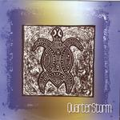

| Artist: | Quarterstorm |
| Title: | Presentation 2004 |
| Label: | self produced |
| Length(s): | 20 minutes |
| Year(s) of release: | 2004 |
| Month of review: | [01/2006] |
| 1) | Titanova Mys | 5.04 |
| 2) | The Smile :) | 5.17 |
| 3) | Choral Zvipany Jedinym Hlasem | 5.18 |
| 4) | Cerna | 5.14 |
The Smile :) opens with piano, and reminds me some of Renaissance's first record. But the pacey vocals make a difference as does the presence of the sax which rears its head again. There is plenty of repetition and variation, indeed things going on, making the song at first glance, when you simply follow the meandering sax, a straightforward one. But sounds are deceiving. Lada does have a versatile and precise voice, although I think I would like her to get more emotional. At the end there is time for a short
On Choral Zvipany Jedinym Hlasem, Lada continues in Czech. This song has some good guitarwork in the middle. slightly psychedelic, and melodic. The drummer is delivering some strong percussive playing resulting in a nice flow the music.
Cerna is a bit more funky and poppy and certainly not the way I hope to see this band going. Certainly a step down after the previous song. The meander style sax is strongly present, and the vocals are less melodious. The piano again reminds me of Renaissance (the excellent Innocence in fact). This middle part is okay for me, and so is the guitaristic closing.